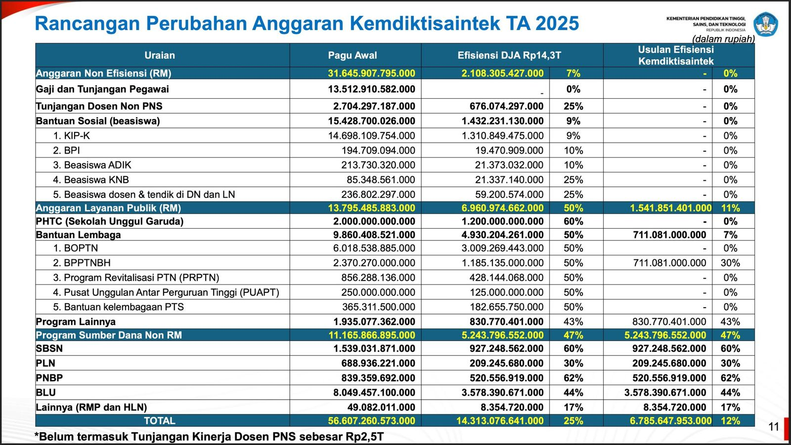

Pemangkasan Anggaran Pendidikan dan Dampaknya terhadap UKT
Bandar Lampung, 16 Februari 2025 - Pemerintah Indonesia telah mengeluarkan kebijakan efisiensi belanja APBN 2025 sebesar Rp306,7 triliun, yang berdampak langsung pada sektor pendidikan. Pemangkasan ini menimbulkan kekhawatiran akan kenaikan Uang Kuliah Tunggal (UKT) di berbagai perguruan tinggi negeri, termasuk ITERA.
Apa yang Menyebabkan Pemangkasan Anggaran Pendidikan?
Pemangkasan anggaran pendidikan ini dilakukan sebagai bagian dari strategi pemerintah untuk mengalihkan dana ke program prioritas lainnya, seperti Makanan Bergizi Gratis (MBG) bagi 82 juta anak dan ibu hamil. Meskipun memiliki tujuan positif, pengurangan dana ini menimbulkan kekhawatiran terkait kualitas pendidikan dan kesejahteraan mahasiswa.
Dampak Pemangkasan terhadap Pendidikan Tinggi
Sejumlah universitas telah mengumumkan kenaikan UKT akibat berkurangnya subsidi pendidikan. Beberapa di antaranya adalah:
- Universitas Indonesia (UI): Kenaikan UKT hingga 20% di beberapa program studi.
- Universitas Sumatera Utara (USU): UKT naik sebesar 30% pada beberapa fakultas.
- Universitas Jenderal Soedirman (Unsoed): UKT golongan V melonjak dari Rp2.500.000 menjadi Rp12.500.000.
ITERA Berkomitmen Menjaga Stabilitas UKT
Di tengah meningkatnya biaya pendidikan di kampus lain, Rektor ITERA, Prof. Dr. I Nyoman Pugeg Aryantha, menegaskan bahwa hingga saat ini, ITERA tidak memiliki rencana untuk menaikkan UKT. "Kami tetap menjaga komitmen untuk memberikan pendidikan yang terjangkau bagi seluruh mahasiswa," tegasnya.
Struktur UKT di ITERA
Berikut adalah struktur UKT di ITERA berdasarkan data terbaru:
| Golongan | UKT per Semester |
|---|---|
| Golongan 1 | Rp500.000 |
| Golongan 2 | Rp1.000.000 |
| Golongan 3-6 | Rp2.500.000 - Rp5.000.000 |
| Golongan 7-10 | Rp6.000.000 - Rp8.000.000 |
| Golongan 11-12 | Rp9.000.000 - Rp9.500.000 |